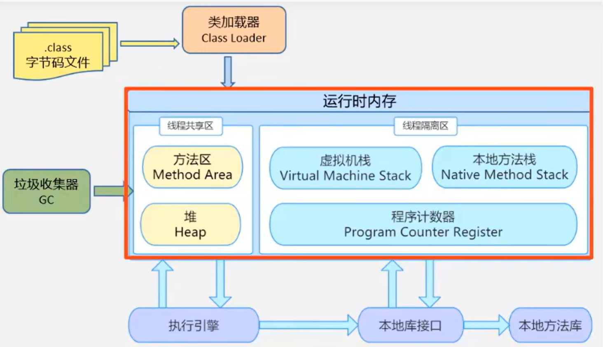
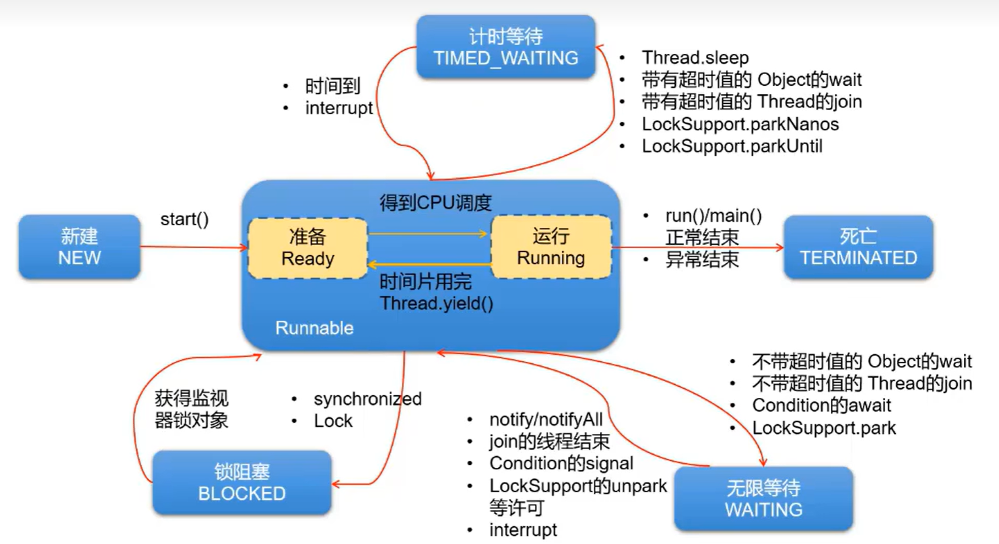

Java高级应用
10 异常处理
- 异常：指程序在执行过程中，出现的非正常情况，如果不处理最终会导致JVM的非正常停止
- Java中把不同的异常用不同的类表示，一旦发生某种异常，就
创建该异常类型的对象，并且抛出throw。然后后续可以捕获catch这个异常对象，并处理。如果没有catch这个异常对象，那这个异常对象将会导致程序终止。 - 程序员要编写相应的代码进行
异常检测，以及异常处理，保证代码的健壮性。
Java异常体系
- Throwable：
java.lang.Throwable类是Java程序执行过程中发生的异常事件对应的类的根父类。 - Throwable的常用方法
public void printStackTrace()：打印异常的详细信息（异常类型、原因、出现的位置）常用此方法public String getMessage()：获取发生异常的原因
- Throwable类有两个子类，Error和Exception
- Error：JVM无法解决的严重问题，一般不编写针对性的代码进行处理。
- StackOverflowError：栈内存溢出
- OutOfMemoryError：堆内存溢出
- Exception：因编程错误或偶然的外在因素导致的一般性问题，需要使用针对性的代码进行处理。
- ArrayIndexOutOfBoundsException：数组角标越界
- NullPointerException：空指针访问
- ClassCastException：类转换异常
- FileNotFountException：文件找不到异常
- Error：JVM无法解决的严重问题，一般不编写针对性的代码进行处理。
- Java程序执行分为编译时过程和运行时过程，所以根据异常发生的阶段，可以分为
编译时异常和运行时异常。 - 编译时异常（checked异常、受检异常）
- 运行时异常（runtime异常、unchecked异常、非受检异常）
异常处理
Java异常处理：将异常处理的程序代码集中在一起，与正常的程序代码分开，使得程序简洁、优雅，并易于维护。
Java异常处理的方式
- try-catch-finally
- throws + 异常类型
try-catch-finally
程序在执行过程中，一旦出现异常，就会在出现异常的代码处创建对应异常的对象，并将该对象抛出。一旦抛出，此程序就不执行其后代码。针对抛出的异常对象，后续进行捕获处理，将异常进行处理后，代码就可以继续执行。
1
2
3
4
5
6
7
8
9
10
11
12try {
... //可能出现异常的代码
}
catch (异常类型1 e) {
... //当产生异常类型1时处理措施
}
catch (异常类型2 e) {
... //当产生异常类型2时处理措施
}
finally {
... //无论是否发生异常，都无条件执行的语句
}如果不同异常类型中存在父子类的关系，则父类异常要写在子类异常下面
把一定要执行的代码写在finally中。无论try和catch中是否存在未被处理的异常，无论try或catch中是否存在return语句，finally中声明的语句都一定要执行
（输入流、输出流、数据库连接、Socket连接）资源回收需要被放在finally中，避免内存泄漏。
throws
在方法的声明处，使用
throws 异常类型1, 异常类型2, ...1
2
3public void method1() throws 异常类型1, 异常类型2 {
// 可能会出现异常的代码
}throws只是将可能出现的异常抛给此方法的调用者，并不算真正处理了异常
手动抛出异常对象
- 在适当位置加入代码：throw new 异常对象("异常信息")
自定义异常类
- 要求：
- 继承于现有的异常体系，通常继承于RuntimeException Exception
- 通常提供几个重载的构造器
- 提供一个全局常量，声明为：static final long serialVersionUID;
- 具体查看其他异常类源码，仿照构建
- 使用
- 在具体代码中，满足指定条件的情况下，需要手动使用throw + 自定义异常类的对象，将异常对象抛出
- 如果自定义异常类是非运行时异常，则必须考虑如何处理此异常类的对象。（try-catch-finally，throws）
- 为什么要自定义异常类
- 通过异常名称就能直接判断此异常出现的原因，所以自定义异常类是为了可以见名知义
11 多线程
相关概念
程序 program：为完成特定任务，用某种语言编写的一组指令的集合。即指
一段静态的代码，静态对象。进程 process：程序的一次执行过程，或正在内存中运行的应用程序。
- 每个进程都有一个独立的内存空间，系统运行一个程序即是一个进程从创建、运行到消亡的过程。（生命周期）
- 程序是静态的，进程是动态的
进程是OS调度和分配资源的最小单位
线程 thread：进程可进一步细化为线程，是程序内部的一条执行路径。一个进程中至少有一个线程
一个进程同一时间若
并行执行多个线程，就是支持多线程的线程是CPU调度和执行的最小单位一个进程中的多个线程共享相同的内存单元，可以访问相同的变量和对象，使得线程间通信变得简便，高效。但多个线程共享的系统资源可以会带来
安全隐患。 不同进程间是不共享内存的
进程间的数据交换和通信的成本很高
线程调度：
- 分时调度：所有线程轮流使用CPU的使用权，平均分配每个线程占用CPU的时间
- 抢占式调度：让优先级高的线程以较大概览有限使用CPU，若优先级相同，随机选择一个，
Java使用的为抢占式调度
并行：同时进行
并发：交替执行
创建和启动线程
JVM允许程序运行多个线程，使用
java.lang.Thread类代表线程，所有的线程对象都必须是Thread类或其子类的实例。Thread类的特性
- 每个线程都是通过某个特定Thread对象的run()方法来完成操作的，把run()方法体称为
线程执行体 - 通过该Thread对象的start()方法来启动这个线程，而非直接调用run()
- 要想实现多线程，必须在主线程中创建新的线程对象
- 每个线程都是通过某个特定Thread对象的run()方法来完成操作的，把run()方法体称为
继承Thread类的方式创建线程
- 步骤：
- 创建Thread的子类
- 重写run方法，将要执行的操作放到方法体中
- 创建该子类对象
- 通过对象调用start()方法
1
2
3
4
5
6
7
8
9
10
11
12
13
14
15
16
17
18
19
20
21
22
23
24
25
26
27
28
29
30public class PrintNumberTest {
public static void main(String[] args) {
EvenNumberPrint evenNumberPrint = new EvenNumberPrint();
OddNumberPrint oddNumberPrint = new OddNumberPrint();
evenNumberPrint.start();
oddNumberPrint.start();
}
}
class EvenNumberPrint extends Thread {
@Override
public void run() {
for (int i = 1; i <= 100; i++) {
if (i % 2 == 0) {
System.out.println("偶数：" + i);
}
}
}
}
class OddNumberPrint extends Thread {
@Override
public void run() {
for (int i = 1; i <= 100; i++) {
if (i % 2 == 1) {
System.out.println("奇数: " + i);
}
}
}
} - 这种方式如果想要同时调用两个线程执行相同的操作，那么需要创建相同子类的两个不同对象，并调用start方法
- 步骤：
由于Java是单继承方式，通过继承的方式去创建线程会导致不够灵活，所以第二种方式是通过实现接口的方式。
实现Runnable接口的方式创建线程
步骤
- 创建一个实现Runnable接口的类
- 实现接口的run方法
- 创建当前实现类的对象
- 将此对象作为参数传递到Thread类的构造器中，创建Thread类的实例
- 调用Thread类实例的start方法
1
2
3
4
5
6
7
8
9
10
11
12
13
14
15
16
17
18
19public class EvenNumberTest {
public static void main(String[] args) {
EvenNumberPrint evenNumberPrint = new EvenNumberPrint();
Thread t1 = new Thread(evenNumberPrint);
t1.start();
}
}
class EvenNumberPrint implements Runnable {
@Override
public void run() {
for (int i = 1; i <= 100; i++) {
if (i % 2 == 0) {
System.out.println(Thread.currentThread().getName() + ":" + i);
}
}
}
}这种方式如果想要同时调用两个线程执行相同的操作，那么不需要创建相同子类的两个不同对象，而需要创建两个Thread类对象，并调用Thread类对象的start方法
以上两种方式的异同点
- 共同点：
- 启动线程，使用的都是Thread类中定义的start()方法
- 创建的线程对象，都是Thread类或其子类的实例
- 不同点
- 一个是类的继承，一个是接口的实现
- 建议使用Runnable接口的方式：避免了类的单继承的局限性；更适合处理有共享数据的问题；实现了代码和数据的分离
- Thread类也实现了Runnable接口
- 共同点：
Thread类常用结构
- 构造器
- public Thread()：分配一个新的线程对象
- public Thread(String name)：分配一个指定名字的新的线程对象
- public Thread(Runnable target)：指定创建线程的目标对象，它实现了Runnable接口中的run方法
- public Thread(Runnable target, String name)：分配一个带有指定目标新的线程对象并指定名字
- 常用方法
- start()：启动线程，调用线程的run()方法
- run()：将线程要执行的操作，声明在run()中
- currentThread()：获取当前正在执行的线程
- getName()：获取线程名
- setName()：设置线程名
- sleep(long millis)：当前线程睡眠指定的毫秒数
- yield()：主动释放CPU的执行权
- join()：在线程A中通过线程B调用join()，意味着线程A进入阻塞状态，直到线程B执行结束，线程A才结束阻塞状态，继续执行
- isAlive()：判断当前线程是否还存活
- 过时方法
- stop()：强行结束线程的执行
- suspend()和resume()：挂起和唤醒，可能造成死锁
- 线程的优先级
- Thread类内部声明的三个优先级常量
- MAX_PRIORITY（10）：最高优先级
- MIN_PRIORITY（1）：最低优先级
- NORM_PRIORITY（5）：普通优先级，默认情况下main线程具有普通优先级
- getPriority()：获取线程优先级
- setPriority()：设置线程优先级
- Thread类内部声明的三个优先级常量
多线程的生命周期
- JDK1.5之前，线程有5种状态
- 新建New、就绪Runnable、运行Running、阻塞Blocked、死亡Dead

- JDK1.5之后对线程状态进行了更改，将就绪和运行合并，将阻塞细分，有6种状态

线程安全问题及解决
当使用多个线程访问同一资源时，若多个线程中对资源有
读和写的操作，就容易出现线程安全问题。Java使用同步机制解决线程的安全问题，同步机制有两种：同步代码块和同步方法
同步代码块
格式：
1
2
3synchronized(同步监视器) {
// 需要被同步的代码
}说明：
- 需要被同步的代码，即为操作共享数据的代码
- 共享数据，即多个线程都需要操作的数据
- 需要被同步的代码，在被synchronized包裹以后，就使得一个线程在操作这些代码的过程中，其他线程必须等待
- 同步监视器，俗称锁。哪个线程获取了锁，哪个线程就能执行需要被同步的代码
- 同步监视器，可以使用任何一个类的对象充当。但是，多个线程必须共用同一个同步监视器
注意：
- 在实现Runnable接口的方式中，同步监视器可以考虑使用：
this - 在继承Thread类的方式中，同步监视器慎用this，一般考虑使用当前
类.class
- 在实现Runnable接口的方式中，同步监视器可以考虑使用：
同步方法
- 说明：
- 如果操作共享数据的代码完整的声明在了一个方法中，那么我们就可以将此方法声明为同步方法即可
- 非静态的同步方法，默认同步监视器就是this
- 静态的同步方法，默认同步监视器就是当前类本身
- 说明：
线程安全的懒汉式单例模式
- 在单例模式中，饿汉式不存在线程安全问题，懒汉式存在线程安全问题。
1 | |
- 为了实现线程安全的懒汉式单例模式，需要做两次校验：
- 第一次校验： 也就是第一个if（singleton==null），这个是为了代码提高代码执行效率，由于单例模式只要一次创建实例即可，所以当创建了一个实例之后，再次调用getInstance方法就不必要进入同步代码块，不用竞争锁。直接返回前面创建的实例即可
- 第二次校验： 也就是第二个if（singleton==null），这个校验是防止二次创建实例，假如有一种情况，当singleton还未被创建时，线程t1调用getInstance方法，由于第一次判断singleton==null，此时线程t1准备继续执行，但是由于资源被线程t2抢占了，此时t2页调用getInstance方法。同样的，由于singleton并没有实例化，t2同样可以通过第一个if，然后继续往下执行，同步代码块，第二个if也通过，然后t2线程创建了一个实例singleton。此时t2线程完成任务，资源又回到t1线程，t1此时也进入同步代码块，如果没有这个第二个if，那么，t1就也会创建一个singleton实例，那么，就会出现创建多个实例的情况，但是加上第二个if，就可以完全避免这个多线程导致多次创建实例的问题。
- 所以说：两次校验都必不可少。
- 需要使用volatile的原因：
- 防止jvm指令重排优化
- 因为 singleton = new Singleton() 这句话可以分为三步：
- 为 singleton 分配内存空间；
- 初始化 singleton；
- 将 singleton 指向分配的内存空间。
- 但是由于JVM具有指令重排的特性，执行顺序有可能变成 1-3-2。指令重排在单线程下不会出现问题，但是在多线程下会导致一个线程获得一个未初始化的实例。例如：线程T1执行了1和3，此时T2调用 getInstance() 后发现 singleton 不为空，因此返回 singleton， 但是此时的 singleton 还没有被初始化。
- 使用 volatile 会禁止JVM指令重排，从而保证在多线程下也能正常执行。
- 因为 singleton = new Singleton() 这句话可以分为三步：
- 保证变量在多线程运行时的可见性
- 在 JDK1.2 之前，Java的内存模型实现总是从主存（即共享内存）读取变量，是不需要进行特别的注意的。而在当前 的 Java 内存模型下，线程可以把变量保存本地内存（比如机器的寄存器）中，而不是直接在主存中进行读写。
- 这就可能造成一个线程在主存中修改了一个变量的值，而另外一个线程还继续使用它在寄存器中的变量值的拷贝，造成数据的不一致。
- 要解决这个问题，就需要把变量声明为 volatile，这就指示 JVM，这个变量是不稳定的，每次使用它都到主存中进行读取。
- 防止jvm指令重排优化
死锁
死锁 deadlock：不同的线程分别占用对方需要的同步资源不放弃，都在等待对方放弃自己需要的同步资源，就形成了线程的死锁。
死锁的必要条件和解决方案：
- 互斥
- 无法被破坏，因为线程需要通过互斥解决安全问题
- 非抢占
- 占用资源的线程在进一步申请其他资源时，如果申请不到，就主动释放掉已经占用的资源
- 占用并等待
- 可以考虑一次性申请所有需要的资源，就不存在等待问题
- 循环等待
- 将资源改为线性顺序，申请资源时，先申请序号小的
- 互斥
一段简单的死锁代码：
1
2
3
4
5
6
7
8
9
10
11
12
13
14
15
16
17
18
19
20
21
22
23
24
25
26
27
28
29
30
31
32
33
34
35
36
37
38
39
40
41
42
43
44
45
46
47
48public class DeadLockTest {
public static void main(String[] args) {
StringBuilder s1 = new StringBuilder();
StringBuilder s2 = new StringBuilder();
new Thread() {
@Override
public void run() {
synchronized (s1) {
s1.append("a");
s2.append("1");
try {
Thread.sleep(100);
} catch (InterruptedException e) {
throw new RuntimeException(e);
}
synchronized (s2) {
s1.append("b");
s2.append("2");
System.out.println(s1);
System.out.println(s2);
}
}
}
}.start();
new Thread() {
@Override
public void run() {
synchronized (s2) {
s1.append("c");
s2.append("3");
try {
Thread.sleep(100);
} catch (InterruptedException e) {
throw new RuntimeException(e);
}
synchronized (s1) {
s1.append("d");
s2.append("4");
System.out.println(s1);
System.out.println(s2);
}
}
}
}.start();
}
}
Lock锁
除了使用synchronized同步机制处理线程安全问题之外，还可以使用jdk5.0提供的lock锁的方式
这里介绍java中reentrantedlock锁，是一个可重入的互斥锁，又称为独占锁。
使用步骤
- 创建lock实例，确保多个线程共用同一个lock实例，需要考虑将此对象声明为static final
- 执行lock()方法，锁定对共享资源的调用
- 执行unlock()方法，释放对共享资源的锁定
使用代码
1
2
3
4
5
6
7
8
9
10
11
12
13
14
15
16
17
18
19
20
21
22
23
24
25
26
27
28
29
30
31
32
33
34
35
36
37
38
39
40
41
42
43
44
45
46
47class Window extends Thread {
static int ticket = 100;
private static final ReentrantLock lock = new ReentrantLock();
public Window() {
}
public Window(String name) {
super(name);
}
@Override
public void run() {
while (true) {
lock.lock();
if (ticket > 0) {
try {
Thread.sleep(100);
} catch (InterruptedException e) {
e.printStackTrace();
}
System.out.println(Thread.currentThread().getName() + "售票，票号：" + ticket);
ticket--;
lock.unlock();
} else {
lock.unlock();
break;
}
}
}
}
public class LockTest {
public static void main(String[] args) {
Window w1 = new Window("窗口1");
Window w2 = new Window("窗口2");
Window w3 = new Window("窗口3");
Window w4 = new Window("窗口4");
w1.start();
w2.start();
w3.start();
w4.start();
}
}在结束资源调用后，一定要执行unlock()，如果有多个分支，在多个分支中都要执行。synchronized和lock对比
- Lock更灵活；作为接口，提供了多种实现类，适合更多更复杂的场景，效率更高
线程的通信
当需要多个线程共同完成一件任务，并且希望他们有规律的执行时，就需要一些通信机制，用以协调它们的工作。
等待唤醒机制
- 这是多线程间的
协作机制 - 在一个线程满足某个条件时，就进入等待状态（
wait()/wait(time)），等待其他线程执行完它们的任务后再将其唤醒（notify()）；或可以指定wait的时间，时间到了自动唤醒；在有多个线程等待时，可以使用notifyAll()来唤醒所有等待线程。wait/notify就是线程间的一种协作机制
- 这是多线程间的
等待唤醒机制示例
两个线程交替打印数字
1
2
3
4
5
6
7
8
9
10
11
12
13
14
15
16
17
18
19
20
21
22
23
24
25
26
27
28
29
30
31
32
33class PrintNumber implements Runnable {
private int number = 1;
@Override
public void run() {
while (true) {
synchronized (this) {
notify();
if (number <= 100) {
System.out.println(Thread.currentThread().getName() + ":" + number);
number++;
try {
wait(); // 线程一旦指定此方法，就进入等待状态，同时，会释放对同步监视器的调用
} catch (InterruptedException e) {
e.printStackTrace();
}
} else {
break;
}
}
}
}
}
public class PrintNumberTest {
public static void main(String[] args) {
PrintNumber printNumber = new PrintNumber();
Thread thread1 = new Thread(printNumber, "线程1");
Thread thread2 = new Thread(printNumber, "线程2");
thread1.start();
thread2.start();
}
}wait()：线程一旦执行此方法，就进入等待状态。同时，会释放对同步监视器的调用
notify()：唤醒被wait的线程中优先级最高的一个线程
notifyAll()：唤醒所有被wait的线程
以上三个方法的使用必须使用在同步代码块或同步方法中
三个方法的调用者必须是同步代码块或同步方法中的监视器，否则或报异常
java.lang.IllegalMonitorStateException以上三个方法被声明在object类中
wait()和sleep()的区别
- 相同点：一旦执行，当前线程都会进入阻塞状态
- 不同点：
- 声明的位置：wait()声明在Object类；sleep()声明在Thread类中，静态的
- 使用的场景：wait()只能使用在同步代码块和同步方法中；sleep()没有限制
- wait()会释放同步监视器，sleep()不会释放
- wait()可以指定时间自动结束阻塞，或通过notify唤醒；sleep()到时间自动结束阻塞
生产者消费者案例
1 | |
创建多线程的其他两种方式
在jdk5.0中新增了两种创建多线程的方式，一种是实现Callable，一种是使用线程池
Callable
与Runnable对比
- 优点：
- call()可以有返回值，更灵活
- call()可以使用throws的方式处理异常，更灵活
- Callable使用了泛型参数，可以指明具体的call()的返回值类型，更灵活
- 缺点：
- 如果在主线程中需要获取分线程call()的返回值，则此时的主线程是阻塞状态的
- 优点：
示例代码
1
2
3
4
5
6
7
8
9
10
11
12
13
14
15
16
17
18
19
20
21
22
23
24
25
26
27
28class NumThread implements Callable {
@Override
public Object call() throws Exception {
int sum = 0;
for (int i = 0; i <= 100; i++) {
if (i % 2 == 0) {
System.out.println(i);
sum += i;
}
}
return sum;
}
}
public class CallableTest {
public static void main(String[] args) {
NumThread numThread = new NumThread();
FutureTask futureTask = new FutureTask(numThread);
Thread thread = new Thread(futureTask);
thread.start();
try {
Object sum = futureTask.get();
System.out.println("总和为：" + sum);
} catch (Exception e) {
e.printStackTrace();
}
}
}
如果并发的线程数量很多，并且每个线程都是执行一个时间很短的任务就结束了，这样频繁创建线程就会大大降低系统的效率，因为频繁创建线程和销毁线程需要时间。
可以提前创建好多个线程，放入线程池中，使用时直接获取，使用完放回池中。可以避免频繁创建销毁、实现重复利用。
线程池
- 优点：
- 提高响应速度（减少了创建新线程的时间）
- 降低资源消耗（重复利用线程池中线程，不需要每次都创建）
- 可以设置相关参数，对线程池中的线程的使用进行管理
- 具体细节要看JUC，java并发编程中查看
- 优点：